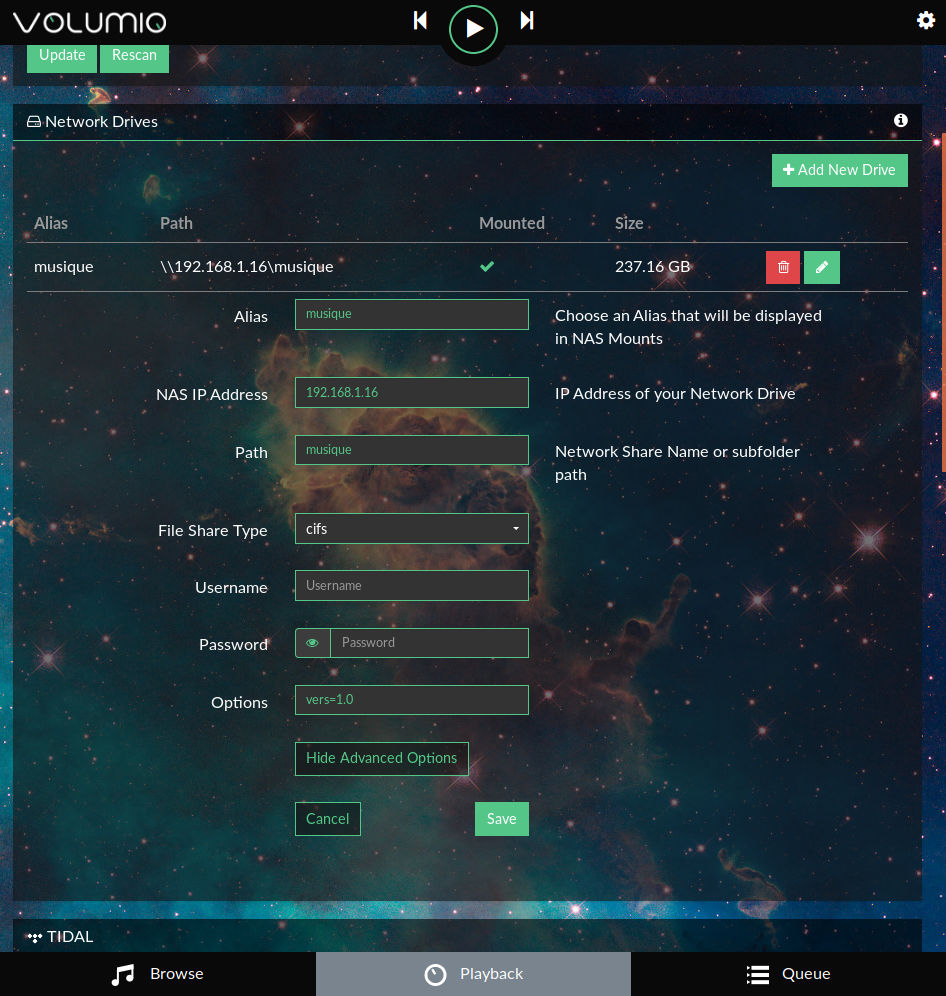

Audio Sources
Audio Sources
What audio sources can I add to Volumio?
NAS drive shares (CIFS & NFS) are easily mounted and scanned by Volumio for audio content. You can add USB hard drives, USB sticks, and use the free space on your SD card for extra or mobile storage. There are lots of built-in internet web radio streams available, and you can also add your own. Spotify and Youtube are available as plugins. Streaming from mobile devices is provided out-of-the-box by Airplay & UPnP/DLNA.
How do I add a NAS drive share?
Navigate to 'Settings' ("cog" icon at the top right), 'My Music' and click on 'Add new drive.' Volumio will attempt to automatically find any music shares, and settings can be added manually if this is not successful. You will need to choose a name for the share, and decide between CIFS (default) or NFS protocols (see your NAS GUI for more information). If entering details manually, you will also need to know the IP address of the NAS, and the path to the share (again see NAS GUI).
Credentials for the connection can be added in the advanced options. If using a domain account add the domain to the 'options' field in the format dom=domainname, e.g. dom=CONTOSO.local, and just enter the username in the username field.
Please ensure that the permissions on the NAS files are set correctly for CIFS in order for Volumio to be able to access them. In the case of NFS, file permissions are not so important, BUT you must allow access to the NAS from the IP address of your Volumio device (set in NAS GUI).
I'm getting an error adding a CIFS network drive on my NAS
Some users are experiencing problems adding shares from Synology and other NAS manufacturers in recent versions of Volumio. The current fix is to add a vers=2.0 entry to the "Options" field under the Network Drive's Advanced Options. Depending on the configuration of your NAS, you may require vers=1.0 or vers=3.0. vers=2.0 seems to be a well-accepted default.
Example of a Cifs network drive with options using vers=1.0 
Does Volumio support Airplay & UPnP/DLNA?
Yes, these are enabled by default, and Volumio will act as a renderer for such streams.
Does Volumio support Bluetooth?
Bluetooth audio playback input is available as part of the MyVolumio Virtuoso and Superstar plans. Information is available at https://volumio.org/my-volumio-overview/
Is there a maximum number of tracks allowed in the music library?
There isn't a maximum number of tracks, but do be aware that indexing of very large collections (>10000) may take some time, especially on lower powered devices.
Can I use the unused space of my SD card for music?
Yes. Volumio has a folder called 'INTERNAL' set aside for this,
which uses the free space on your SD card.
Inside Volumio, the path inside to this share is currently /mnt/INTERNAL
(this could change in later versions of Volumio).
The folder is shared on your network as a Samba share called "Internal Storage". You can upload music files to that share and they will be shown in your Volumio music library, in a folder called 'INTERNAL'. Note that the folder does not appear in the music library if it is empty.
To upload to the Samba share,
- connect to
\\volumio.local, or the IP address\\<volumioip>. - You should be able to connect as the Guest user. If that fails, try connecting as the Volumio user.